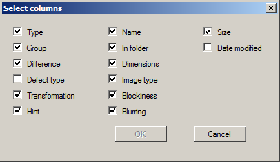
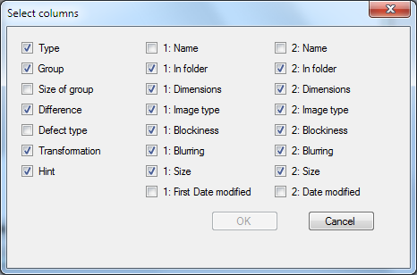

Main Menu
With the main menu, you can customize the look of the program, as well as perform all basic operations. The most important and frequently used items of the menu are dublicated by the Tool Bar. The contents of the main menu are described in detail below:
File
Menu File contains the following items:
Open search profile - clicking on the item you can load a previously saved search profile (search settings, search paths and search results). This item is duplicated by button of the Tool Bar.
Save search profile as - this item allows you to save your current search profile with a new name. This item is duplicated by button of the Tool Bar.
Load profile on loading - when enabled this menu item, on loading the program the last kept profile will be loaded. By default this item is on.
Save profile on closing - when enabled this menu item, on closing the program the current profile will saved. By default this item is on.
Exit - when you click on this point the program will exit.
Edit
Menu Edit contains the following items:
Undo (Ctrl-Z) - allows to undo last user action (deletion, renaming and moving of images or marking result as mistake). User can cancel up to 10 consecutive operations. Note that the operations "load results", "start search" and "refresh results" can not be undone. This item is duplicated by button of the Tool Bar.
Redo (Ctrl-Y) - allows you to repeat the previously undone action. This item is duplicated by button of the Tool Bar.
Sellect all (Ctrl-A) - allows to select all search results.
View
Menu View contains the following items:
Tool Bar - this menu item defines the visibility of the Tool Bar. By default this item is on.
Status Bar - this menu item defines the visibility of the Status Bar. By default this item is on.
Language - this option specifies the interface language. By default it may be Russian or English, but user can add translation into his native language. To do so, you need to create their own version of the file of string resources in xml-format and add into data\resources\strings directory.
View mode of results - In this menu item you can select the mode of the results view (table of vertical pairs or the table of horizontal pairs). The table of vertical pairs is used by default.
Select Columns - item brings up a window where you can adjust the appearance of columns in a table of results. In the table of vertical pairs of view mode of results, it looks like:
And for a table of horizontal pairs of view mode of results, it looks like:
Hot keys - this item brings up a window where you can change hot keys used in the program.
Stretch small images - this menu item defines whether to stretch small images to the size of Preview Panel. By default this item is off.
Proportional size of images - when enabled, this menu item, a pair of images are displayed on the same scale at Preview Panel. By default this item is on.
Show neighbour images - when enabled, this menu item, on the panel of a preview of the image the neighbour images when sorting according to a name will be shown. By default this item is off.
Search
Menu Search contains the following items:
Start search - if you click this item then the search will be started. This item is duplicated by button of the Tool Bar.
Refresh results - selecting this item, you can refresh the search results. It is sometimes necessary to make, if user delete or move pictures from the list with using any external program. In this case, links to pictures that are stored in the program are not valid. The operation "Refresh results" is needed to remove these invalid links from the results list. This item is duplicated by button of the Tool Bar.
Delete irrelevant records from a database of image - selecting the item, you can remove from a database of images of record relating to images which were moved or removed. It is sometimes necessary to do in order to optimize its size.
Paths - opens Paths Window or its simplified version. This item is duplicated by button of the Toolbar.
Options - opens Options Window. This item is duplicated by button of the Toolbar.
One search path - this menu item enables/disables the use of a simplified version of the Paths Window. By default, this option is turned off.
Use database of image - this menu item determines whether to use when searching a database of previously scanned images. By default, this option is turned on.
Check the results at loading - this item determines whether to validate the results during loading. By default this option is enabled.
Check the database of mistakes at loading - this item determines whether to validate the database of mistakes during loading. By default this option is enabled.
Help
Menu Help contains the following items:
Help - if you click the item, then help system will be opened. This item is duplicated by button of the Toolbar.
About program... - this menu item displays a summary of the program.
Checking for updates - this menu item enables/disables the checking for new versions of the program.
New Version
Menu New Version has a red color. This menu at the normal state is hidden from the user. It becomes visible if a new version of the program is available. Number of its version is displayed in the tooltip. By clicking this menu you will come to the site of the program, where you can download the new version of the program.